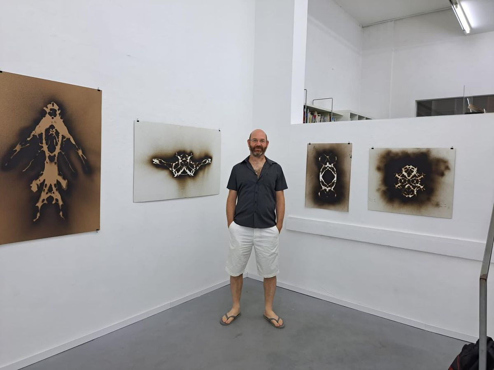
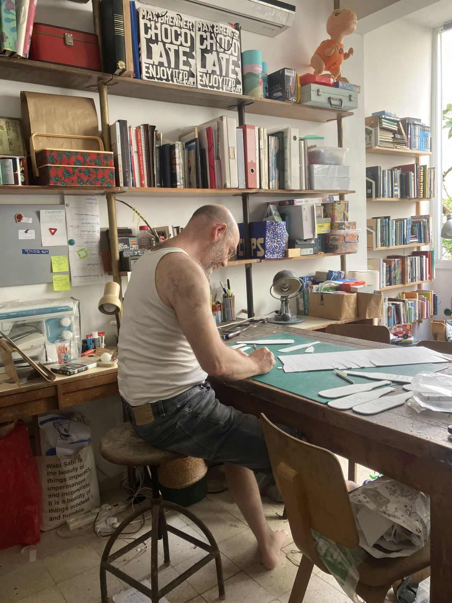

Etamar Beglikter
b. 1977 · lives and works in Tel AvivEtamar Beglikter found his first volume of the Hebrew Encyclopedia on a Tel Aviv sidewalk, next to the recycling bins. He took it home, opened it on the table and started to cut. Twenty years later he is still cutting — one entry at a time, until only the word it was meant to explain is left standing.
He works from a studio-home in Tel Aviv, with encyclopedia volumes, PVC and ready-made objects. His works are held by the Israel Museum, the Knesset Art Collection and MUZA — Eretz Israel Museum, and have been shown at the Artists’ House in Tel Aviv, the Janco-Dada Museum and the Tel Aviv Biennale of Crafts & Design.
“An encyclopedia promises to hold everything. I cut it until it holds one thing.”
Etamar Beglikter · Tel Aviv, 2026I grew up with the Hebrew Encyclopedia on the living-room shelf. It was the most expensive thing in the house and the least opened. Today the same volumes wait on the sidewalk for the truck. I bring them back to the table, choose a single entry and cut away everything around it. Nothing is added. The rest of the knowledge is still there, pressed into the layers of the edge.
The works are funny at first glance and sad on the second. They are about what a culture decides to keep, and how quickly it lets go. With Volume for Value, people give me the volumes they grew up with, and the story of each set travels with the work it becomes.
{{g.first}}{{g.rest}}
- {{r.y}}{{r.t}}{{r.v}}

Get in touch
Write to us in Hebrew or English - we usually answer within two working days.
- studio@beglikter.com
- +972 54 000 0000
- By appointment · City center, Tel Aviv